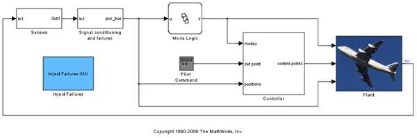
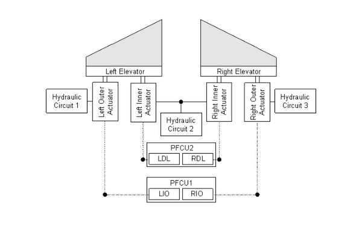
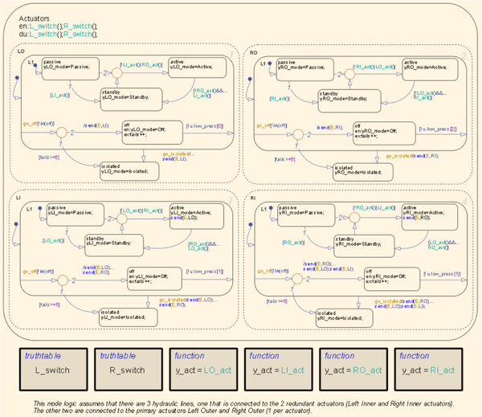
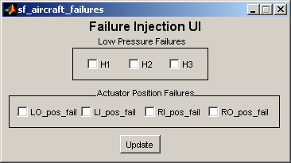
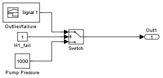

航空機用エレベーターの制御装置の故障管理制御ロジックのモデル化
このデモでは、モデルベース デザインを使用して、一対の航空機用エレベーターに対応する故障検出、故障分離、およびリカバリ (FDIR) アプリケーションを設計します。このモデルで使用される制御ロジックは、「FlightGear インターフェイスを持つ NASA HL-20」というタイトルの Aerospace Blockset™ デモの Avionics サブシステムで使用される制御ロジックと同一です。
目次
図 1 :航空機用エレベーターの制御装置の最上位レベル
エレベーターの制御装置の説明
一般的な航空機では、2 機のエレベーターが水平尾翼に備え付けられています (機体の両側に 1 機ずつ)。航空機の安全性を高めるために、装置には冗長な部品が数多くあります。
図 2 :エレベーター装置のコンポーネントがそれぞれ接続される様子を示す略図
図 2 に示されているように、次のようなコンポーネントがあります。
- エレベーター 1 機につき 2 つの独立油圧アクチュエータ (合計 4 つ)
- アクチュエータを駆動するための 3 つの個別の油圧回路
- 2 つのプライマリ フライト コントロール ユニット (PFCU)
- 1 つのアクチュエータごとに 2 つの制御モジュール :フル レンジの制御則と制限付きレンジまたは低減レンジの制御則
エレベーターの制御装置の制御ロジック
図 3 :アクチュエータのモード ロジック
外側のアクチュエータはそれぞれに専用の油圧回路があり、内側のアクチュエータには共有の油圧回路があります。各アクチュエータは、パッシブ、スタンバイ、アクティブ、オフ、分離の 5 つのモードのいずれかになります。既定の設定では、外側のアクチュエータはアクティブ モードで、内側のアクチュエータはスタンバイ モードです。外側のアクチュエータや外側のアクチュエータに接続されている油圧回路で故障が検出されると、装置は安定を維持するために、外側のアクチュエータをオフにし、内側のアクチュエータをオンにすることで対応します。
故障の定義
航空機が申し分のない高度で飛行していれば、アクチュエータの位置には一定の値が維持されます。アクチュエータの位置がゼロ ポイントから 10cm 上下する場合は、そのアクチュエータに故障が発生しています。また、位置が非常に速く変化する場合も故障です (0.01 秒で少なくとも 20cm の位置変化がある場合など)。
同様に、圧力が範囲を外れていたり、急速に変化したりする場合も、油圧回路のいずれかに故障があります。このデモでは、油圧回路の圧力は常に 500kPa ～ 2MPa を保ち、圧力は 0.01 秒で 100kPa 以上変化しないようになっています。
装置への故障の投入
図 4 :装置への故障の投入に使用される GUI
故障を油圧回路またはアクチュエータに投入するには、GUIDE で作成した個別の GUI (図 4) を使用します。GUI のボックスをオンまたはオフにして [更新] ボタンを押すと、カスタムの MATLAB® コードが GUI と Simulink® モデル間の媒介として実行されます。たとえば、[H1] ボックスをオンにし、[更新] ボタンを押して故障を油圧回路 1 に投入すると、次のカスタムな MATLAB コードが評価されます。
% Define H1_fail Constant block location and get current value
blockname=[mname '/Signal conditioning '...
'and failures /Hydraulic Pressures/Measured ',char(10),...
'Hydraulic system 1 ',...
'pressures/Hydraulic pressure/H1_fail'];
val=get(handles.H1,'Value');
% Change value of H1_fail Constant block from 0 to 1 or from 1 to 0.
if val
set_param(blockname,'value','1');
else
set_param(blockname,'value','0');
end
これにより、油圧回路 1 に故障を投入する Signal 条件付きサブシステム内のスイッチが事実上オンになります。
図 5 :Constant ブロックの H1_fail の値が 0 ではない場合に故障を油圧回路 #1 に投入するスイッチ
故障への対応
油圧回路やアクチュエータの故障に対して、Stateflow® は、真理値表関数、イベント ブロードキャスト、および制御ロジックで対応します。例として、油圧回路 1 に故障があってもそれ以外の故障が発生していなければ、L_switch 真理値表関数によって Decision D1 が true と評価され、左外側のアクチュエータをオフにする Action 2 が実行されます。このイベントは、左外側のアクチュエータをオフにする LO ステートにブロードキャストされます。この後、左内側のアクチュエータがアクティブになるように、イベントが LO ステートから LI ステートにブロードキャストされます。次に、左内側のアクチュエータもアクティブになると、右内側のアクチュエータがアクティブになります。このようになると、イベントは RI ステートから RO ステートに送られて、右外側のアクチュエータがスタンバイ状態になります。つまり、油圧回路 1 で故障が発生すると、左外側のアクチュエータはオフになり、右外側のアクチュエータはスタンバイ状態になり、内側の 2 つのアクチュエータがアクティブになります。
故障が発生したときのアクチュエータの分離
いずれかのアクチュエータで故障が発生したら、それ以降、そのアクチュエータをアクティブにすることはできません。これを表すために、ステート チャート内には出力されない遷移を含んでいる分離ステートが追加されます。したがって、いったんアクチュエータが分離ステートになると、そのアクチュエータは分離ステートのままになります。
故障からの回復
故障した装置がオンラインに戻った場合に備えて、リカバリ機能も制御ロジックに含まれています。たとえば、これ以上油圧回路 1 の故障が検出されず、条件 !u.low_press[0] が true であれば、LO ステートは Off ステートからスタンバイ状態に遷移できます。このように、左内側のアクチュエータなどの他の装置で故障が発生すると、左外側のアクチュエータがアクティブになります。
参照
Pieter J. Mosterman、Jason Ghidella 共著『Model Reuse for the Training of Fault Scenarios in Aerospace』、AIAA® Modeling and Simulation Technologies Conference 会報誌、CD-ROM、論文 2004 ～ 4931、2004年 8 月 16 ～ 19 日、ロード アイランド州、プロビデンス、ロード アイランド コンベンション センター
Jason R. Ghidella、Pieter J. Mosterman 共著『Applying Model-Based Design to a Fault Detection, Isolation, and Recovery System』、Military Embedded Systems、2006 年夏号